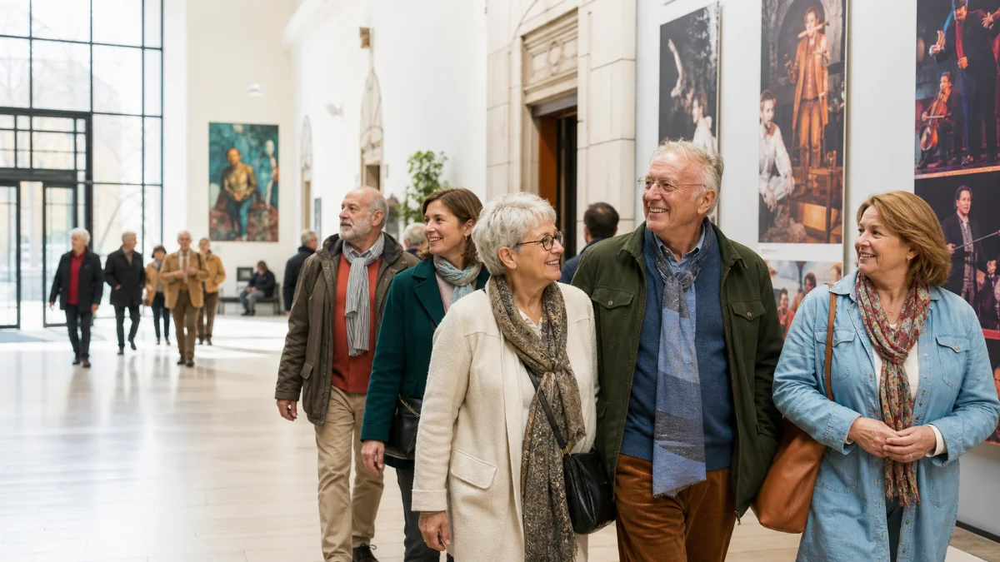
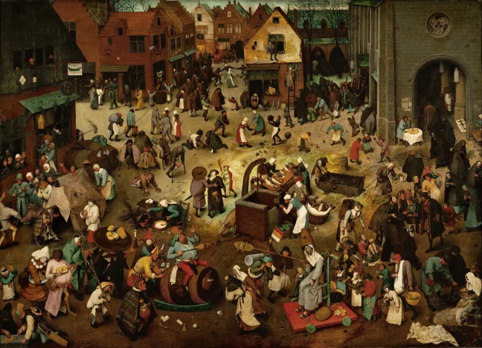
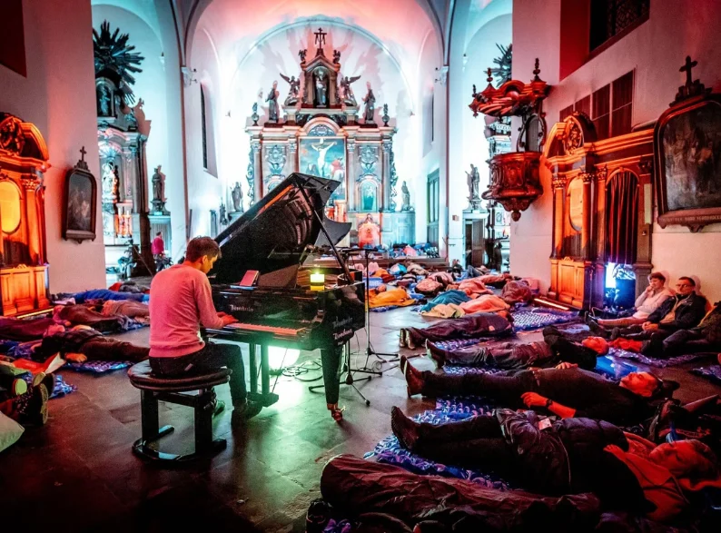
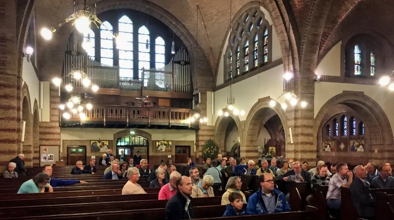
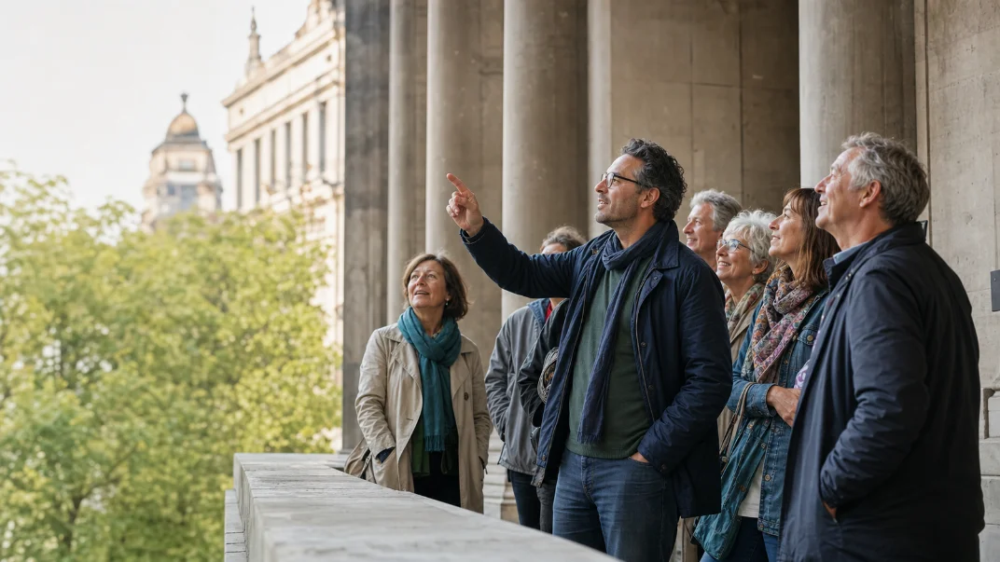
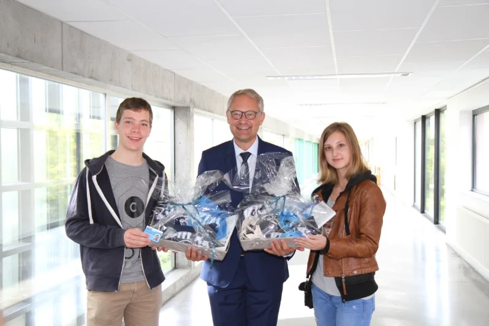
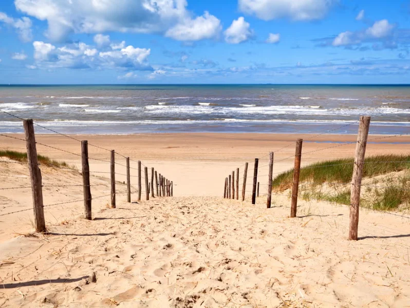
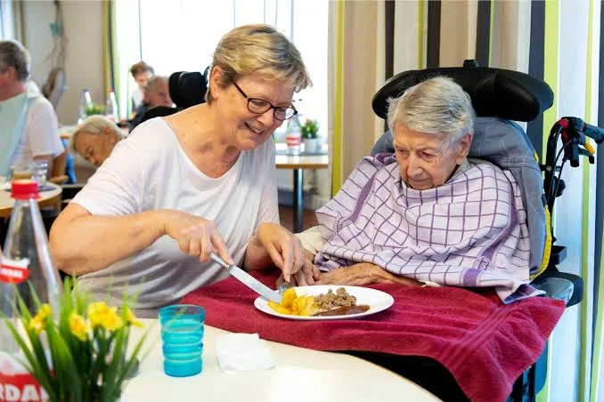

za 11 jul
za 11 jul
Gegidst bezoek: Museum Plantin-Moretus
In de voetsporen van de oude drukkers — met gids, koffie na afloop.
Door: Groep AntwerpenLees meer →

Koperen Passer brengt mensen samen rond lezingen, uitstappen, concerten en tentoonstellingen — georganiseerd door vrijwilligers, overal in Vlaanderen.
za 11 jul
In de voetsporen van de oude drukkers — met gids, koffie na afloop.

do 16 julKunsthistorica Els Vermeire bekijkt de oude meesters met een frisse blik.
 za 25 jul
Volzet
za 25 jul
Volzet
Stadsverkenning langs plekken die je als toerist nooit ziet.

zo 02 augEnsemble Tiletum brengt renaissancemuziek — gratis voor leden.

wo 12 augMet beklimming van de Sint-Romboutstoren en een verrassing bovenaan.
 za 22 aug
za 22 aug
Internationale cartoonexpo met gegidste rondleiding door de curator.
Koperen Passer is een sociaal-culturele vereniging waar groepen vrijwilligers kwaliteitsvolle culturele activiteiten organiseren: van gegidste wandelingen en museumbezoeken tot concerten, lezingen en daguitstappen.
Ons devies Labore et Constantia — met inzet en volharding — dragen we al even trots als de passer in ons embleem.
Maak kennis met onze werking

24 juni 2026
10 juni 2026
28 mei 2026Word lid van Koperen Passer en ontdek elke maand nieuwe activiteiten bij jou in de buurt — alleen komen mag, samen genieten gegarandeerd.